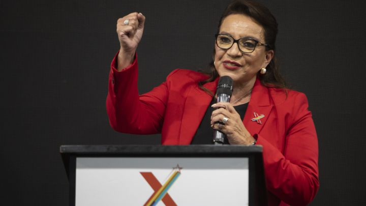
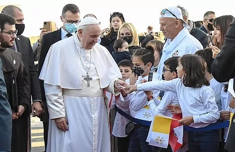

TEGUCIGALPA, HONDURAS.- Este 28 de Noviembre el pueblo hondureño eligió a su nuevo presidente para el periodo 2022-2026
Castro, del partido Libertad y Refundación (Libre) y esposa del expresidente Manuel Zelaya, ganó las elecciones de Honduras y no solo se convierte en la primera mujer que gobernará el país, sino que también pondrá fin a 12 años de gobierno conservador y devolverá a la izquierda hondureña al poder por primera vez desde que Zelaya fuera depuesto por un golpe de Estado en 2009.
El Papa Francisco llega a Chipre para acercarse al drama migratorio
NICOSIA, CHIPRE.- El papa Francisco lanzó el jueves (02.12.2021) en Chipre un llamamiento a la "unidad", en plena crisis migratoria en Europa y en una isla dividida en dos, durante la primera etapa de un viaje de cinco días que incluirá también a Grecia.
El Papa pasea firme y sin turbarse por los mismos campos de minas políticas que los funcionarios europeos llevan décadas intentando sortear. El viaje comienza este jueves en Chipre. Esta isla del Mediterráneo Oriental, cuyo país es miembro de la UE desde 2004, lleva más de 45 años partida en dos por un conflicto irresoluto entre las comunidades de origen turco y griego...
